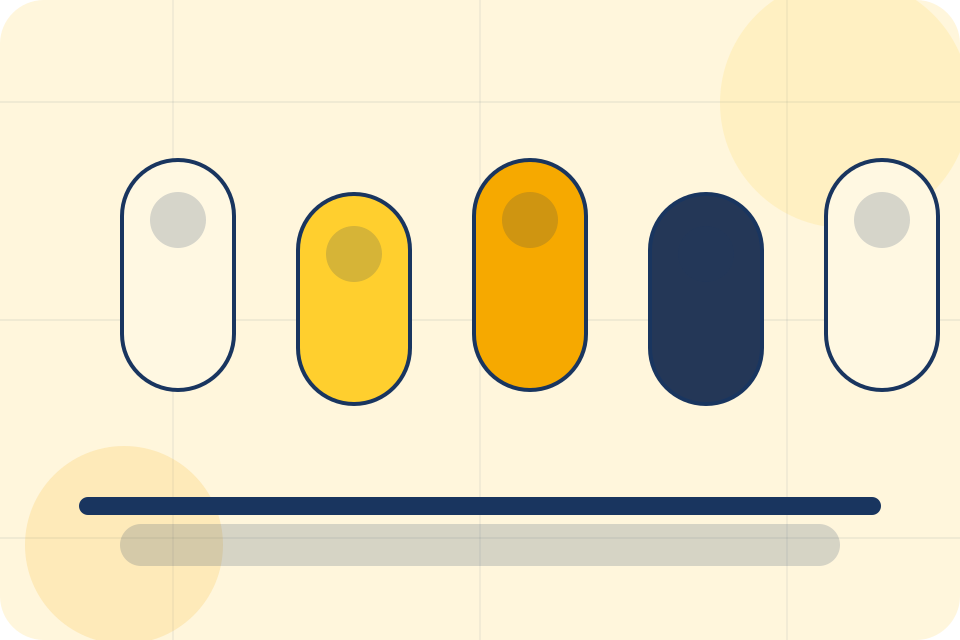
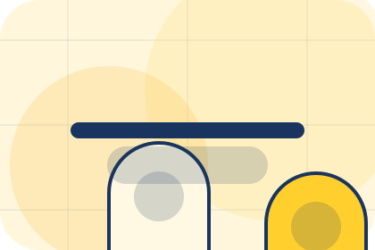
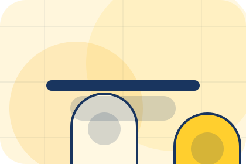
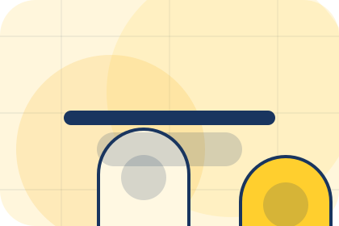
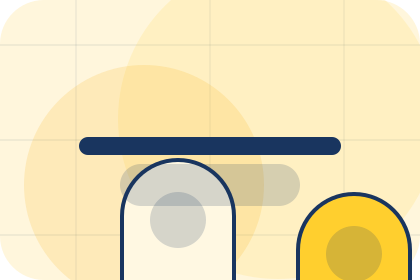
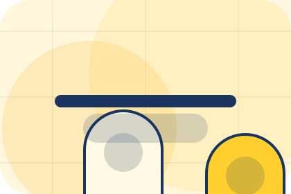
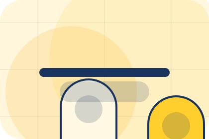
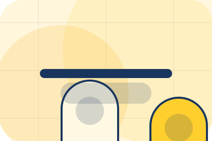
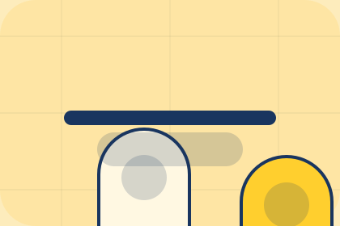

Journal / 01
Journal by Luma
Journal shaped for wellness, personal care & lifestyle services decisions.
Journal opens as a clear wellness decision hub: what Luma offers, who it helps, why it matters, and which route to take first.
The first screen combines positioning, proof, primary action, and fast internal navigation, so people can act immediately or compare the rest of the journal route with context.
Clear intakeHuman follow-upPractical reassurance
Product routine hero
Choose a starting profile
Select the closest route and Luma keeps the next step, proof, and follow-up expectation aligned with personal improvement and reassurance.

Journal / 02
Topics
Topics gives researching visitors a practical route into guides, checklists, and comparison material without leaving the site structure.
Each resource behaves like a useful internal link, giving cold and warm visitors a way to learn, compare, and return to the action path.
Explore JournalLuma structures topics around guide, checklist, and a clear next route so visitors can compare the block quickly before they book a consultation.
Book ConsultationJournal / 03
Selfcare
Selfcare gives researching visitors a practical route into guides, checklists, and comparison material without leaving the site structure.
Each resource behaves like a useful internal link, giving cold and warm visitors a way to learn, compare, and return to the action path.
Explore Journal

Guide
A useful entry point for visitors who need more context before they book a consultation.
Journal / 04
Lifestyle
Lifestyle gives researching visitors a practical route into guides, checklists, and comparison material without leaving the site structure.
Each resource behaves like a useful internal link, giving cold and warm visitors a way to learn, compare, and return to the action path.
Explore JournalGuide
A useful entry point for visitors who need more context before they book a consultation.

Checklist
A scannable comparison aid that makes research usable before the next decision.

Questions
A route back to support, services, or contact when the visitor is ready to act.
Journal / 05
Beauty
Beauty gives researching visitors a practical route into guides, checklists, and comparison material without leaving the site structure.
Each resource behaves like a useful internal link, giving cold and warm visitors a way to learn, compare, and return to the action path.
Explore JournalA useful entry point for visitors who need more context before they book a consultation.
A scannable comparison aid that makes research usable before the next decision.
A route back to support, services, or contact when the visitor is ready to act.
Journal / 06
Recovery
Recovery gives researching visitors a practical route into guides, checklists, and comparison material without leaving the site structure.
Each resource behaves like a useful internal link, giving cold and warm visitors a way to learn, compare, and return to the action path.
Explore JournalGuide
A useful entry point for visitors who need more context before they book a consultation.
Checklist
A scannable comparison aid that makes research usable before the next decision.
Questions
A route back to support, services, or contact when the visitor is ready to act.
Journal / 07
Education
Education gives researching visitors a practical route into guides, checklists, and comparison material without leaving the site structure.
Each resource behaves like a useful internal link, giving cold and warm visitors a way to learn, compare, and return to the action path.
Explore JournalGuide
A useful entry point for visitors who need more context before they book a consultation.
Checklist
A scannable comparison aid that makes research usable before the next decision.
Questions
A route back to support, services, or contact when the visitor is ready to act.
Journal / 08
Tips
Tips gives researching visitors a practical route into guides, checklists, and comparison material without leaving the site structure.
Each resource behaves like a useful internal link, giving cold and warm visitors a way to learn, compare, and return to the action path.
Explore Journal
Guide
A useful entry point for visitors who need more context before they book a consultation.
Journal / 09
Articles
Articles gives researching visitors a practical route into guides, checklists, and comparison material without leaving the site structure.
Each resource behaves like a useful internal link, giving cold and warm visitors a way to learn, compare, and return to the action path.
View ResourcesGuide
A useful entry point for visitors who need more context before they book a consultation.

Checklist
A scannable comparison aid that makes research usable before the next decision.

Questions
A route back to support, services, or contact when the visitor is ready to act.
Luma articles guide
A useful entry point for visitors who need more context before they book a consultation.
Open resourceLuma articles checklist
A scannable comparison aid that makes research usable before the next decision.
Open resourceLuma articles questions
A route back to support, services, or contact when the visitor is ready to act.
Open resourceJournal / 10
Book Consultation
Luma closes the journal route with a clear action, a quick reminder of the value, and a low-friction way to book a consultation.
Visitors who are ready can use the primary action. Visitors who are still comparing can scan the section links, proof, and support routes before they book a consultation.
Book ConsultationThe final block keeps the choice simple: act now, compare one more proof route, or send enough detail for a focused response.
Book Consultationpersonal improvement and reassurance
Book Consultation
A routine-first wellness shop with offer strip, product education, rounded capsules, and evidence-led reassurance. Journal ends with a direct path to book a consultation, plus enough context for visitors who still need to compare.

Book ConsultationNotes
Information is provided for planning and should be reviewed for the final client, location, and operating rules.